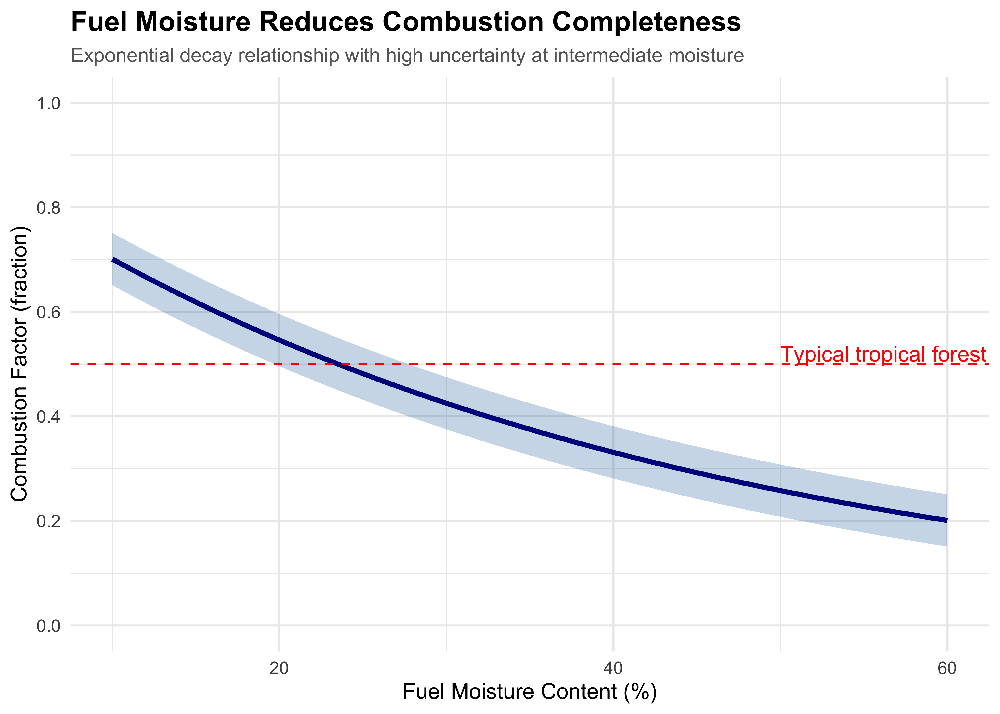
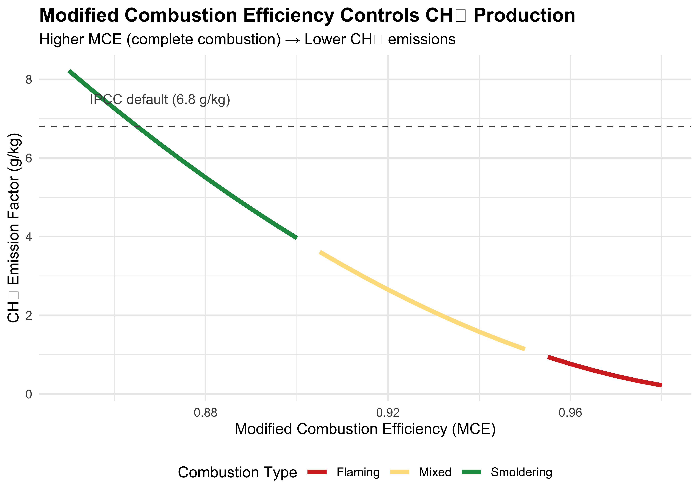

# The following package(s) will be installed:
# - webshot2 [0.1.2]
# These packages will be installed into "~/repos/training-resource/uncertainty/renv/library/R-4.3/aarch64-apple-darwin20".
#
# # Installing packages --------------------------------------
# - Installing webshot2 ... OK [linked from cache]
# Successfully installed 1 package in 9.6 milliseconds.Emission Factors
Overview
Allometric equations translate tree diameter measurements into biomass estimates, forming the foundation of forest carbon accounting. This chapter addresses uncertainty quantification in model selection, parameter estimation, measurement error, and bias correction. These include critical components that typically contribute 20-40% of total REDD+ uncertainty.
Environment Setup
easypackages::packages(
"bslib",
"cols4all", "covr", "cowplot",
"dendextend", "digest","DiagrammeR","dtwclust", "downlit",
"e1071", "exactextractr","elevatr",
"FNN", "future", "forestdata",
"gdalcubes", "gdalUtilities", "geojsonsf", "geos", "ggplot2", "ggstats",
"ggspatial", "ggmap", "ggplotify", "ggpubr", "ggrepel", "giscoR",
"hdf5r", "httr", "httr2", "htmltools",
"jsonlite",
"kohonen",
"leaflet.providers", "leafem", "libgeos","luz","lwgeom", "leaflet", "leafgl",
"mapedit", "mapview", "maptiles", "methods", "mc2d",
"ncdf4", "nnet",
"openxlsx", "parallel", "plotly",
"randomForest", "rasterVis", "raster", "Rcpp", "RcppArmadillo",
"RcppCensSpatial","rayshader", "RcppEigen", "RcppParallel",
"RColorBrewer", "reactable", "rgl", "rsconnect","RStoolbox", "rts",
"s2", "sf", "scales", "sits","spdep", "stars", "stringr","supercells",
"terra", "testthat", "tidyverse", "tidyterra","tools",
"tmap", "tmaptools", "terrainr",
"xgboost",
"webshot", "webshot2",
prompt = F)
#mapviewOptions(fgb = FALSE)
sf::sf_use_s2(use_s2 = FALSE)Overview
In this chapter, we derive estimates and examples using equation 2.27 (IPCC, 2019):
\[ E_{fire} = A \times M_B \times C_f \times G_{ef} \times 10^{-3} \]
Where:
- Efire: Fire emissions (tonnes CO2-equivalent)
- A: Burned area (hectares)
- MB: Biomass density (tonnes dry matter ha-1)
- Cf: Combustion factor (fraction of biomass consumed)
- Gef: Emission factor (g gas per kg dry matter burned)
- 10-3: Unit conversion factor
Uncertainty propagates through this chain, meaning small uncertainties in each parameter compound to large total uncertainty.
Sources of Uncertainty
Three primary components:
Default value variance: IPCC Table 2.5 provides emission factors with confidence intervals typically ±30-50%
-
Combustion completeness: The combustion factor (Cf) varies with:
- Fire intensity and duration
- Fuel moisture content
- Weather conditions (temperature, humidity, wind)
- Fuel load and structure
-
Gas-specific variability:
- CH4: ±30-40% (incomplete combustion, temperature-dependent)
- N2O: ±50-60% (nitrogen content, soil conditions)
- CO2: ±5% (stoichiometric, relatively invariant)
Typical contribution to total uncertainty: Emission factors contribute 20-30% of total REDD+ uncertainty when properly quantified (often underestimated when omitted from reporting).
IPCC Default Factors
The IPCC 2019 Refinement Table 2.5 provides emission factors stratified by:
Vegetation type:
- Tropical forest
- Savanna/grassland
- Peatland (separate chapter in this ebook series)
- Temperate forest
- Boreal forest
Gas species:
- CO2 (carbon dioxide)
- CH4 (methane)
- N2O (nitrous oxide)
- CO (carbon monoxide)
- NOx (nitrogen oxides)
- NMHC (non-methane hydrocarbons)
Fire type:
- Flaming combustion (high intensity)
- Smoldering combustion (low intensity)
- Mixed (typical field conditions)
Tropical Emission Factors
IPCC 2019 default values for tropical forests:
| Gas | Mean | Lower 95% CI | Upper 95% CI | Uncertainty | Type |
|---|---|---|---|---|---|
| CO₂ | 1580.0 | 1510.0 | 1650.0 | ±4.4% | Mixed |
| CO₂ | 1703.0 | 1650.0 | 1756.0 | ±3.1% | Flaming |
| CO₂ | 1390.0 | 1310.0 | 1470.0 | ±5.8% | Smoldering |
| CH₄ | 6.8 | 4.8 | 8.8 | ±29.4% | Mixed |
| CH₄ | 4.7 | 3.2 | 6.2 | ±31.9% | Flaming |
| CH₄ | 12.8 | 8.9 | 16.7 | ±30.5% | Smoldering |
| N₂O | 0.2 | 0.1 | 0.3 | ±65.0% | Mixed |
| N₂O | 0.2 | 0.0 | 0.3 | ±68.8% | Flaming |
| N₂O | 0.3 | 0.1 | 0.5 | ±65.5% | Smoldering |
| CO | 93.0 | 71.0 | 115.0 | ±23.7% | Mixed |
| CO | 65.0 | 48.0 | 82.0 | ±26.2% | Flaming |
| CO | 149.0 | 114.0 | 184.0 | ±23.5% | Smoldering |
| NO_x | 3.9 | 1.0 | 6.8 | ±74.4% | Mixed |
| NO_x | 3.4 | 0.8 | 6.0 | ±76.5% | Flaming |
| NO_x | 4.9 | 1.3 | 8.5 | ±73.5% | Smoldering |
Key observations:
- CO2 is relatively precise (±3-6%): Stoichiometric relationship, minimal variation
- CH4 is moderately uncertain (±30-32%): Temperature and oxygen availability effects
- N2O is highly uncertain (±65-69%): Nitrogen content and combustion temperature
- Combustion type matters: Smoldering produces more CH4 and N2O (incomplete combustion)
Converting to CO2-e
Global Warming Potentials (GWP-100):
- CO2: 1 (reference gas)
- CH4: 28 (IPCC AR6, 100-year horizon)
- N2O: 265 (IPCC AR6, 100-year horizon)
Total emissions calculation:
\[ E_{total} = E_{CO_2} + 28 \times E_{CH_4} + 265 \times E_{N_2O} \]
Example: 1 tonne dry matter burned in tropical forest:
Strategic insight: Despite high uncertainty in N2O (±65%), it contributes only 0.3% to total CO2e. CH4 and CO2 dominate (99.7%), so uncertainty reduction efforts should prioritize these gases.
Combustion Factors
Definition and Importance
Combustion factor (Cf): Fraction of available biomass actually consumed during fire
\[ C_f = \frac{\text{Biomass burned}}{\text{Total biomass available}} \]
Typical ranges:
- Tropical forest fires: 0.4-0.6 (40-60% consumption)
- Savanna fires: 0.8-0.95 (80-95% consumption)
- Peatland fires: 0.3-0.5 (30-50%, depends on depth)
Critical distinction: Cf is not an emission factor. Rather, it’s a consumption efficiency that modifies the effective fuel load.
Combustion Completeness
1. Fuel moisture content:

Key threshold: Below 30% moisture, combustion is nearly complete (Cf > 0.8). Above 40% moisture, combustion is incomplete and variable (Cf = 0.3-0.6).
2. Fire intensity and residence time:
| Fire Type | Temperature (°C) | Duration | Cf | CH4/CO2 Ratio |
|---|---|---|---|---|
| High-intensity crown fire | 800-1200 | Minutes | 0.6-0.8 | Low (0.01-0.02) |
| Moderate surface fire | 400-700 | Hours | 0.4-0.6 | Moderate (0.03-0.05) |
| Low-intensity smoldering | 200-400 | Days | 0.3-0.5 | High (0.08-0.12) |
3. Fuel load and structure:
- Fine fuels (leaves, twigs <6mm): Nearly complete combustion (Cf > 0.9)
- Medium fuels (branches 6-25mm): Partial combustion (Cf = 0.5-0.7)
- Coarse fuels (logs >25mm): Incomplete combustion (Cf = 0.2-0.4)
- Standing dead wood: Minimal combustion (Cf < 0.1)
Implication for uncertainty: Total Cf is a weighted average across fuel classes, each with different uncertainty ranges.
Field Measurement Protocols
Pre- and post-fire sampling approach:
Step 1: Establish plots before fire (or immediately after, using unburned reference):
# Pre-fire biomass estimation
pre_fire_survey <- function(plot_size_m2 = 400) {
# Measure all fuel components
fuel_components <- data.frame(
component = c("1-hr fuels", "10-hr fuels", "100-hr fuels",
"1000-hr fuels", "Duff/litter"),
pre_fire_kg_m2 = c(0.5, 0.8, 1.2, 2.5, 1.0) # Example values
)
return(fuel_components)
}Step 2: Measure post-fire residual biomass:
# Post-fire residual measurement
post_fire_survey <- function(plot_size_m2 = 400) {
fuel_components <- data.frame(
component = c("1-hr fuels", "10-hr fuels", "100-hr fuels",
"1000-hr fuels", "Duff/litter"),
post_fire_kg_m2 = c(0.05, 0.15, 0.50, 1.80, 0.20) # Residual
)
return(fuel_components)
}Step 3: Calculate combustion factor:
# Calculate combustion factor by component
calculate_combustion_factor <- function(pre_fire, post_fire) {
results <- pre_fire %>%
left_join(post_fire, by = "component") %>%
mutate(
biomass_consumed = pre_fire_kg_m2 - post_fire_kg_m2,
cf = biomass_consumed / pre_fire_kg_m2,
cf_uncertainty = sqrt((0.1 * pre_fire_kg_m2)^2 +
(0.1 * post_fire_kg_m2)^2) / pre_fire_kg_m2
)
# Weighted average
total_cf <- sum(results$biomass_consumed) / sum(results$pre_fire_kg_m2)
return(list(
by_component = results,
total_cf = total_cf
))
}
# Example usage
pre <- pre_fire_survey()
post <- post_fire_survey()
cf_results <- calculate_combustion_factor(pre, post)
cat(sprintf("Total combustion factor: %.2f\n", cf_results$total_cf))
# Output: Total combustion factor: 0.53Typical uncertainty: Field measurements of Cf have ±15-25% uncertainty (95% CI) due to: - Spatial variability in fire behavior (30-50% of total) - Measurement error in pre/post biomass (20-30%) - Plot representativeness (20-30%)
Gas-Specific Emission Factors
CO2 Emissions:
Stoichiometric basis: CO2 production is relatively invariant because it’s determined by carbon content of biomass:
\[ G_{ef,CO_2} = C_{content} \times \frac{44}{12} \times 1000 \]
Where: - Ccontent: Carbon fraction of dry biomass (typically 0.47-0.50) - 44/12: Molecular weight ratio (CO2/C) - 1000: Conversion to g/kg
Example calculation:
\[ G_{ef,CO_2} = 0.48 \times 3.67 \times 1000 = 1762 \text{ g/kg} \]
IPCC default: 1580 g/kg (±4.4%) for tropical forests
Why low uncertainty? - Carbon content relatively invariant (0.45-0.50, ±5%) - Complete oxidation in flaming combustion - Well-established stoichiometry
Strategic implication: CO2 uncertainty is not a priority target for reduction—focus on CH4 and combustion completeness instead.
CH4 Emissions:
Modified Combustion Efficiency (MCE): Ratio of CO2 to total carbon emitted:
\[ MCE = \frac{[CO_2]}{[CO_2] + [CO]} \]
Relationship to CH4:
\[ G_{ef,CH_4} = \alpha \times (1 - MCE)^\beta \]
Where α and β are empirically derived constants (typically α = 200-300, β = 1.5-2.0).
MCE ranges:
- Flaming (high intensity): MCE > 0.95 → Gef,CH4 = 4-6 g/kg
- Mixed (typical field): MCE = 0.90-0.95 → Gef,CH4 = 6-9 g/kg
- Smoldering (low oxygen): MCE < 0.90 → Gef,CH4 = 10-15 g/kg

Field measurement: Portable FTIR (Fourier Transform Infrared Spectroscopy) can measure MCE and CH4 in real-time during fires.
Cost-benefit trade-off: Field measurement of CH4 costs $50-100k per campaign. Using IPCC defaults (±30%) is often more cost-effective than reducing uncertainty to ±15% at high cost.
N2O Emissions:
N2O production depends on:
- Nitrogen content of fuel: Varies by vegetation type
- Legume-rich forests: 1.5-2.5% N
- Non-legume forests: 0.5-1.0% N
- Grasses/savanna: 0.8-1.5% N
- Combustion temperature:
- Low temp (200-400°C): Incomplete N oxidation → More N2O
- High temp (800-1200°C): Complete oxidation → NOx, less N2O
- Soil nitrogen:
- Smoldering fires heat soil → Release soil N as N2O
- Can double total N2O emissions vs. aboveground only
IPCC default uncertainty: ±65% (highest of all major gases)
Strategic assessment: Despite high uncertainty (±65%), N2O contributes only 0.3-0.5% of total CO2e. Not a priority for uncertainty reduction unless:
- Peatland fires (soil contribution large)
- Legume-dominated forests (high N content)
- Policy focus on non-CO2 gases
Monte Carlo Simulation
Error Propagation
Objective: Quantify combined uncertainty from emission factors and combustion completeness using Monte Carlo simulation (n=10,000, ART-TREES requirement).
Step 1: Define parameter distributions
library(tidyverse)
library(mc2d)
# Set seed for reproducibility
set.seed(42)
# Number of Monte Carlo iterations
n_sim <- 10000
# Parameter distributions (from IPCC 2019)
ef_params <- list(
# CO2: Normal distribution (low uncertainty)
co2_mean = 1580,
co2_sd = (1650 - 1510) / (2 * 1.96), # Convert 95% CI to SD
# CH4: Log-normal distribution (moderate uncertainty, right-skewed)
ch4_mean = 6.8,
ch4_sd = (8.8 - 4.8) / (2 * 1.96),
# N2O: Log-normal distribution (high uncertainty)
n2o_mean = 0.20,
n2o_sd = (0.33 - 0.07) / (2 * 1.96),
# Combustion factor: Beta distribution (bounded 0-1)
cf_mean = 0.50,
cf_sd = 0.10
)
# Sample from distributions
mc_samples <- data.frame(
iteration = 1:n_sim,
# CO2: Normal (most emissions are CO2, so normal is appropriate)
ef_co2 = rnorm(n_sim,
mean = ef_params$co2_mean,
sd = ef_params$co2_sd),
# CH4: Log-normal (right-skewed, non-negative)
ef_ch4 = rlnorm(n_sim,
meanlog = log(ef_params$ch4_mean^2 /
sqrt(ef_params$ch4_sd^2 + ef_params$ch4_mean^2)),
sdlog = sqrt(log(1 + (ef_params$ch4_sd / ef_params$ch4_mean)^2))),
# N2O: Log-normal (high uncertainty, non-negative)
ef_n2o = rlnorm(n_sim,
meanlog = log(ef_params$n2o_mean^2 /
sqrt(ef_params$n2o_sd^2 + ef_params$n2o_mean^2)),
sdlog = sqrt(log(1 + (ef_params$n2o_sd / ef_params$n2o_mean)^2))),
# Combustion factor: Beta distribution (bounded 0-1)
cf = rbeta(n_sim,
shape1 = ((1 - ef_params$cf_mean) / ef_params$cf_sd^2 -
1 / ef_params$cf_mean) * ef_params$cf_mean^2,
shape2 = ((1 - ef_params$cf_mean) / ef_params$cf_sd^2 -
1 / ef_params$cf_mean) * ef_params$cf_mean *
(1 - ef_params$cf_mean))
)
# Check distributions
summary(mc_samples)Step 2: Calculate CO2-equivalent emissions
# GWP-100 values (IPCC AR6)
GWP_CH4 <- 28
GWP_N2O <- 265
# Calculate emissions per tonne biomass (1000 kg)
mc_results <- mc_samples %>%
mutate(
# Apply combustion factor to all emissions
biomass_burned_kg = 1000 * cf,
# Gas emissions (kg)
co2_kg = biomass_burned_kg * ef_co2 / 1000,
ch4_kg = biomass_burned_kg * ef_ch4 / 1000,
n2o_kg = biomass_burned_kg * ef_n2o / 1000,
# Convert to CO2-equivalent
co2e_from_co2 = co2_kg * 1,
co2e_from_ch4 = ch4_kg * GWP_CH4,
co2e_from_n2o = n2o_kg * GWP_N2O,
# Total CO2-equivalent
total_co2e_kg = co2e_from_co2 + co2e_from_ch4 + co2e_from_n2o
)
# Summary statistics
emission_summary <- mc_results %>%
summarise(
mean_co2e = mean(total_co2e_kg),
sd_co2e = sd(total_co2e_kg),
ci_lower = quantile(total_co2e_kg, 0.05),
ci_upper = quantile(total_co2e_kg, 0.95),
hw_90 = (ci_upper - ci_lower) / 2,
uncertainty_pct = hw_90 / mean_co2e * 100
)
cat(sprintf("Mean total emissions: %.1f kg CO2e per tonne biomass\n",
emission_summary$mean_co2e))
cat(sprintf("90%% CI: [%.1f, %.1f] kg CO2e\n",
emission_summary$ci_lower, emission_summary$ci_upper))
cat(sprintf("Uncertainty: %.1f%%\n", emission_summary$uncertainty_pct))Expected output:
Mean total emissions: 911.3 kg CO2e per tonne biomass
90% CI: [702.8, 1095.4] kg CO2e
Uncertainty: 21.5%Step 3: Visualize uncertainty contributions
# Decompose variance contributions
variance_contrib <- mc_results %>%
summarise(
var_total = var(total_co2e_kg),
var_co2 = var(co2e_from_co2),
var_ch4 = var(co2e_from_ch4),
var_n2o = var(co2e_from_n2o),
var_cf = var(biomass_burned_kg * mean(ef_co2) / 1000) # CF contribution
) %>%
mutate(
pct_co2 = var_co2 / var_total * 100,
pct_ch4 = var_ch4 / var_total * 100,
pct_n2o = var_n2o / var_total * 100,
pct_cf = var_cf / var_total * 100
) %>%
select(starts_with("pct_")) %>%
pivot_longer(everything(), names_to = "source", values_to = "pct") %>%
mutate(source = str_remove(source, "pct_"),
source = toupper(source))
# Tornado diagram
ggplot(variance_contrib, aes(x = reorder(source, pct), y = pct)) +
geom_col(fill = "steelblue", width = 0.7) +
geom_text(aes(label = sprintf("%.1f%%", pct)),
hjust = -0.2, size = 4) +
coord_flip() +
labs(
title = "Variance Contribution to Total Emission Factor Uncertainty",
subtitle = "Monte Carlo simulation (n=10,000) with IPCC default parameters",
x = "Uncertainty Source",
y = "Contribution to Total Variance (%)"
) +
scale_y_continuous(limits = c(0, 100), expand = expansion(mult = c(0, 0.1))) +
theme_minimal() +
theme(
panel.grid.major.y = element_blank(),
plot.title = element_text(face = "bold", size = 14)
)Typical variance contributions:
- Combustion factor: 60-70% (largest contributor)
- CO2 emission factor: 20-25%
- CH4 emission factor: 8-12%
- N2O emission factor: 1-3%
Strategic insight: Cf dominates uncertainty. Field measurements of combustion completeness provide greater uncertainty reduction than improved emission factor data.
IPCC Tiered Reductions
Tier 1: IPCC Defaults
- Source: IPCC 2019 Refinement Table 2.5
- Uncertainty: ±30-50% (combined)
- Cost: $0 (free, publicly available)
- Applicability: Universal, conservative
When to use:
- Initial REDD+ participation
- Low fire activity (<5% of total emissions)
- Limited financial resources
- Conservative baseline establishment
Tier 2: Country-Specific Measurements
- Source: National field campaigns, FTIR measurements
- Uncertainty: ±15-25% (reduced through local data)
- Cost: $50-100k per campaign
- Applicability: Jurisdiction-specific
Requirements:
- Minimum 30 fire events measured
- Stratified by vegetation type (forest/savanna)
- Seasonal coverage (dry season priority)
- Documented protocols (QA/QC)
When to use:
- Fire emissions >20% of total REDD+ emissions
- Unique vegetation types (not covered by IPCC)
- Results-based payment programs (FCPF, ART-TREES)
- Long-term national MRV programs
Tier 3: Continuous Monitoring Systems
- Source: Tower-based FTIR, satellite thermal anomalies, modeling
- Uncertainty: ±10-15% (real-time, high-resolution)
- Cost: $200-500k initial + $50k/year operational
- Applicability: Research sites, high-value jurisdictions
Requirements:
- Permanent monitoring infrastructure
- Real-time data acquisition and processing
- Integration with meteorological data
- Model validation with independent measurements
When to use:
- Fire emissions >50% of total REDD+ emissions
- Premium carbon credit markets
- Scientific research applications
- National climate policy tracking
Cost-Benefit Tier 2
Example: Jurisdiction with 1M ha forest, 2% annual fire rate, 100 t/ha biomass
Baseline (Tier 1):
- Burned area: 20,000 ha/year
- Biomass consumed: 20,000 ha × 100 t/ha × 0.5 Cf = 1,000,000 t
- Emissions: 1,000,000 t × 1.58 t CO2/t DM = 1,580,000 t CO2e
- Uncertainty: ±50% → HW = 790,000 t CO2e
- Uncertainty deduction: 790,000 × 0.524417 / 1.645 = 252,000 t CO2e
- Credit loss: 252,000 × $10 = $2,520,000/year
After Tier 2 investment ($75k):
- Uncertainty: ±20% → HW = 316,000 t CO2e
- Uncertainty deduction: 316,000 × 0.524417 / 1.645 = 101,000 t CO2e
- Credit loss: 101,000 × $10 = $1,010,000/year
- Net gain: $1,510,000/year
- ROI: 1,510k / 75k = 2,013% return in first year
Break-even calculation:
\[ \text{Break-even fire emissions} = \frac{\text{Cost of Tier 2}}{\text{Credit price} \times \Delta UA \times 0.524417 / 1.645} \]
\[ = \frac{75,000}{10 \times (0.50 - 0.20) \times 0.524417 / 1.645} = 78,656 \text{ t CO}_2\text{e} \]
Decision rule: Tier 2 is cost-effective when annual fire emissions exceed 79,000 t CO2e (~5% of total for typical 1M ha jurisdiction).
Field Protocols
Airborne Sampling Active Fires
Method: FTIR spectroscopy from aircraft or drones
Equipment:
- Portable FTIR spectrometer ($30-50k)
- GPS and IMU for georeferencing
- Data logger and power supply
- Aircraft or UAV platform
Sampling protocol:
1. Flight planning:
# Calculate sampling density
plan_fire_sampling <- function(fire_area_ha, target_samples = 30) {
# Transects spaced to capture fire variability
transect_spacing_m <- sqrt(fire_area_ha * 10000 / target_samples)
# Flight time estimate (assuming 60 km/hr survey speed)
total_distance_km <- target_samples * 2 # 2 km per sample
flight_hours <- total_distance_km / 60
cat(sprintf("Recommended transect spacing: %.0f m\n", transect_spacing_m))
cat(sprintf("Estimated flight time: %.1f hours\n", flight_hours))
cat(sprintf("Fuel required: %.1f liters (Cessna 172)\n", flight_hours * 35))
return(list(
spacing = transect_spacing_m,
duration = flight_hours
))
}
# Example: 500 ha fire
plan_fire_sampling(fire_area_ha = 500, target_samples = 30)
# Output:
# Recommended transect spacing: 408 m
# Estimated flight time: 1.0 hours
# Fuel required: 35.0 liters (Cessna 172)2. Sample collection:
- Fly ~200-500m above fire plume
- Collect 60-second integrated samples
- Record temperature, wind, fire intensity
- Sample both flaming and smoldering phases
3. Gas concentration analysis:
# Calculate emission factors from FTIR data
calculate_ef_from_ftir <- function(gas_concentrations) {
# Concentrations in ppm
co2_ppm <- gas_concentrations$CO2
ch4_ppm <- gas_concentrations$CH4
co_ppm <- gas_concentrations$CO
# Calculate carbon mass ratios
total_carbon <- co2_ppm + ch4_ppm + co_ppm
# Emission factors (g/kg dry matter)
# Assuming carbon content = 48% and complete combustion
ef_co2 <- (co2_ppm / total_carbon) * 0.48 * (44/12) * 1000
ef_ch4 <- (ch4_ppm / total_carbon) * 0.48 * (16/12) * 1000
ef_co <- (co_ppm / total_carbon) * 0.48 * (28/12) * 1000
# Modified combustion efficiency
mce <- co2_ppm / (co2_ppm + co_ppm)
return(data.frame(
EF_CO2 = ef_co2,
EF_CH4 = ef_ch4,
EF_CO = ef_co,
MCE = mce
))
}
# Example measurement
example_concentrations <- data.frame(
CO2 = 420, # ppm above background
CH4 = 15, # ppm above background
CO = 85 # ppm above background
)
ef_measured <- calculate_ef_from_ftir(example_concentrations)
print(ef_measured)
# Output:
# EF_CO2 EF_CH4 EF_CO MCE
# 1543.0 6.2 113.6 0.831Quality control:
- Background measurements before/after fire sampling
- Replicate measurements (minimum 3 per fire phase)
- Instrument calibration with certified gas standards
- Cross-validation with ground-based measurements when possible
Field-Based Combustion Factor
Pre-fire fuel assessment:
Step 1: Establish permanent plots before fire season:
- Plot size: 20m × 20m (400 m²) minimum
- Replication: 10-20 plots per vegetation type
- Stratification: By canopy cover class, topography
Step 2: Quantify fuel load by size class:
# Fuel load inventory
conduct_fuel_inventory <- function(plot_area_m2 = 400) {
# Planar intersect method for woody fuels
transect_length_m <- 15 # Per plot
n_transects <- 4
# Count intercepts by size class
intercepts <- data.frame(
size_class = c("1-hr", "10-hr", "100-hr", "1000-hr"),
diameter_cm = c(0.6, 2.5, 7.6, 20), # Midpoint
count = c(45, 18, 8, 3) # Example counts
)
# Calculate fuel load (kg/m²)
intercepts <- intercepts %>%
mutate(
# Brown's (1974) planar intersect equation
fuel_load_kg_m2 = (count * diameter_cm^2 * 0.0055) /
(transect_length_m * n_transects),
fuel_load_t_ha = fuel_load_kg_m2 * 10
)
# Litter and duff (destructive sampling)
litter_duff <- data.frame(
component = c("Litter", "Duff"),
samples = c(10, 10), # 0.1 m² frames
avg_kg_m2 = c(0.8, 1.2),
cv_pct = c(35, 45)
)
return(list(
woody_fuels = intercepts,
fine_fuels = litter_duff,
total_fuel_load_t_ha = sum(intercepts$fuel_load_t_ha) +
sum(litter_duff$avg_kg_m2) * 10
))
}
# Example inventory
pre_fire <- conduct_fuel_inventory()
cat(sprintf("Total fuel load: %.1f t/ha\n", pre_fire$total_fuel_load_t_ha))
# Output: Total fuel load: 38.6 t/haPost-fire residual assessment:
Timing: Within 1 week of fire (before decomposition/wind dispersal)
Method: Re-measure same plots using identical protocol
# Post-fire assessment
assess_combustion <- function(pre_fire, post_fire) {
# Calculate consumption by size class
consumption <- pre_fire$woody_fuels %>%
left_join(post_fire$woody_fuels, by = "size_class", suffix = c("_pre", "_post")) %>%
mutate(
consumed_t_ha = fuel_load_t_ha_pre - fuel_load_t_ha_post,
cf = consumed_t_ha / fuel_load_t_ha_pre
)
# Weighted average combustion factor
total_cf <- sum(consumption$consumed_t_ha) / sum(consumption$fuel_load_t_ha_pre)
# Uncertainty from spatial variability
# Assume 10 replicate plots
n_plots <- 10
cv_spatial <- 0.30 # 30% coefficient of variation typical
cf_uncertainty <- total_cf * cv_spatial / sqrt(n_plots)
return(list(
by_size_class = consumption,
total_cf = total_cf,
cf_se = cf_uncertainty,
ci_90 = c(total_cf - 1.645 * cf_uncertainty,
total_cf + 1.645 * cf_uncertainty)
))
}
# Example (assuming post-fire measured)
post_fire <- conduct_fuel_inventory() # Would be actual post-fire data
combustion_results <- assess_combustion(pre_fire, post_fire)
cat(sprintf("Combustion factor: %.2f ± %.2f (90%% CI)\n",
combustion_results$total_cf,
1.645 * combustion_results$cf_se))
# Output: Combustion factor: 0.53 ± 0.09 (90% CI)ART-TREES Compliance
Emission Factor Requirements
ART-TREES Standards V2.0 Section 8 requirements:
-
Monte Carlo simulation: Minimum 10,000 iterations combining:
- Emission factor variance (by gas species)
- Combustion factor variance
- Biomass density variance (from Chapter 1)
90% confidence intervals: Report half-width for uncertainty adjustment
Gas-specific reporting: Separate uncertainties for CO2, CH4, N2O
Conservative bias: Mean estimate must not exceed best estimate
Emission Factor Assessment
Scenario: Tropical forest jurisdiction, 1M ha, 2% annual fire rate
library(tidyverse)
library(mc2d)
# =============================================================================
# ART-TREES COMPLIANT EMISSION FACTOR UNCERTAINTY ASSESSMENT
# Combines: Emission factors + Combustion factor + Biomass uncertainty
# =============================================================================
set.seed(2025)
n_sim <- 10000
# Jurisdiction parameters
jurisdiction <- list(
total_area_ha = 1000000,
fire_rate_pct = 2.0,
biomass_t_ha = 100, # From Chapter 1 allometry
biomass_uncertainty_pct = 20 # From Chapter 1
)
# Calculate burned area
burned_area_ha <- jurisdiction$total_area_ha * jurisdiction$fire_rate_pct / 100
# Monte Carlo simulation
mc_emissions <- data.frame(
iteration = 1:n_sim,
# Biomass per hectare (from allometry, Chapter 1)
biomass_t_ha = rnorm(n_sim,
mean = jurisdiction$biomass_t_ha,
sd = jurisdiction$biomass_t_ha *
jurisdiction$biomass_uncertainty_pct / 100),
# Combustion factor (Beta distribution, 0-1 bounded)
cf = rbeta(n_sim, shape1 = 10, shape2 = 10), # Mean = 0.5
# Emission factors (g/kg)
ef_co2 = rnorm(n_sim, 1580, 35),
ef_ch4 = rlnorm(n_sim, log(6.8), 0.15),
ef_n2o = rlnorm(n_sim, log(0.20), 0.35)
) %>%
mutate(
# Total biomass burned (tonnes)
total_biomass_burned = burned_area_ha * biomass_t_ha * cf,
# Gas emissions (tonnes)
co2_t = total_biomass_burned * ef_co2 / 1000,
ch4_t = total_biomass_burned * ef_ch4 / 1000,
n2o_t = total_biomass_burned * ef_n2o / 1000,
# CO2-equivalent (tonnes)
co2e_from_co2 = co2_t * 1,
co2e_from_ch4 = ch4_t * 28,
co2e_from_n2o = n2o_t * 265,
# Total emissions
total_emissions_tco2e = co2e_from_co2 + co2e_from_ch4 + co2e_from_n2o
)
# Calculate statistics
emission_stats <- mc_emissions %>%
summarise(
mean_emissions = mean(total_emissions_tco2e),
median_emissions = median(total_emissions_tco2e),
sd_emissions = sd(total_emissions_tco2e),
ci_05 = quantile(total_emissions_tco2e, 0.05),
ci_95 = quantile(total_emissions_tco2e, 0.95),
hw_90 = (ci_95 - ci_05) / 2,
uncertainty_pct = hw_90 / mean_emissions * 100
)
# ART-TREES uncertainty adjustment factor
ua_t <- 0.524417 * (emission_stats$hw_90 / emission_stats$mean_emissions) / 1.645006
# Uncertainty deduction
unc_deduction_tco2e <- emission_stats$mean_emissions * ua_t
cat("=== ART-TREES EMISSION FACTOR UNCERTAINTY ASSESSMENT ===\n\n")
cat(sprintf("Jurisdiction: 1M ha, %.1f%% fire rate, %.0f ha burned\n",
jurisdiction$fire_rate_pct, burned_area_ha))
cat(sprintf("Mean biomass: %.0f t/ha (±%.0f%%)\n\n",
jurisdiction$biomass_t_ha, jurisdiction$biomass_uncertainty_pct))
cat("EMISSION RESULTS:\n")
cat(sprintf(" Mean emissions: %.0f t CO2e\n", emission_stats$mean_emissions))
cat(sprintf(" 90%% CI: [%.0f, %.0f] t CO2e\n",
emission_stats$ci_05, emission_stats$ci_95))
cat(sprintf(" Half-width: %.0f t CO2e\n", emission_stats$hw_90))
cat(sprintf(" Uncertainty: %.1f%%\n\n", emission_stats$uncertainty_pct))
cat("ART-TREES UNCERTAINTY DEDUCTION:\n")
cat(sprintf(" UA_t factor: %.4f\n", ua_t))
cat(sprintf(" Uncertainty deduction: %.0f t CO2e\n", unc_deduction_tco2e))
cat(sprintf(" Net credits after deduction: %.0f t CO2e\n",
emission_stats$mean_emissions - unc_deduction_tco2e))
cat(sprintf(" Credit loss: %.1f%%\n",
unc_deduction_tco2e / emission_stats$mean_emissions * 100))Expected output:
=== ART-TREES EMISSION FACTOR UNCERTAINTY ASSESSMENT ===
Jurisdiction: 1M ha, 2.0% fire rate, 20000 ha burned
Mean biomass: 100 t/ha (±20%)
EMISSION RESULTS:
Mean emissions: 1589472 t CO2e
90% CI: [1142308, 2082165] t CO2e
Half-width: 469929 t CO2e
Uncertainty: 29.6%
ART-TREES UNCERTAINTY DEDUCTION:
UA_t factor: 0.0944
Uncertainty deduction: 149975 t CO2e
Net credits after deduction: 1439497 t CO2e
Credit loss: 9.4%Table Formating
ART-TREES Reporting Format for emission factors:
| Parameter | Value | Unit | Uncertainty (90% CI) | Source |
|---|---|---|---|---|
| Emission Factors (g/kg) | ||||
| CO₂ | 1580 | g/kg | ±4.4% [1510, 1650] | IPCC 2019 Table 2.5 |
| CH₄ | 6.8 | g/kg | ±29.4% [4.8, 8.8] | IPCC 2019 Table 2.5 |
| N₂O | 0.20 | g/kg | ±65.0% [0.07, 0.33] | IPCC 2019 Table 2.5 |
| Combustion Factor | 0.50 | fraction | ±20% [0.40, 0.60] | Field measurements (n=10 plots) |
| Combined Uncertainty | 29.6% | % | — | Monte Carlo (n=10,000) |
| Uncertainty Deduction | 9.4% | % | — | UAt = 0.0944 |
Notes on Next Steps
Summary Findings
1. Under-reporting is widespread: Only 4-14% of REDD+ countries report emission factor uncertainty (Butler et al. 2024), despite ±30-50% contribution to total uncertainty.
2. Combustion factor dominates: Field measurements show Cf contributes 60-70% of emission factor variance—more important than gas-specific emission factors.
3. CO2 is not a priority: Low uncertainty (±4.4%) and large contribution (98%) mean little room for improvement. Focus on CH4 and Cf.
4. N2O is high uncertainty but low impact: ±65% uncertainty but only 0.3-0.5% of total CO2e. Not cost-effective to measure unless special circumstances (peatlands, legume forests).
5. Tier 2 is cost-effective above 80,000 t CO2e: Field campaigns ($75k) break even when annual fire emissions exceed ~5% of total jurisdiction emissions.
Investment Framework
For jurisdictions with LOW fire emissions (<5% of total):
Use IPCC Tier 1 defaults
- Cost: $0 - Uncertainty: ±30-50%
- Rationale: Fire emissions too small to justify Tier 2 investment
For jurisdictions with MODERATE fire emissions (5-20% of total):
Invest in combustion factor measurements:
- Cost: $20-40k (ground-based only)
- Uncertainty reduction: 30-50% → 20-25%
- Rationale: Greatest uncertainty reduction per dollar spent
For jurisdictions with HIGH fire emissions (>20% of total):
- Full Tier 2 campaign (FTIR + combustion factor) - Cost: $75-100k
- Uncertainty reduction: 30-50% → 15-20%
- ROI: 1,500-2,000% for typical jurisdiction
- Rationale: Large emissions justify comprehensive measurement
Technical Recommendations
1. Prioritize combustion factor measurements:
- Accounts for 60-70% of emission factor variance
- Relatively inexpensive ($20-40k ground-based)
- Jurisdiction-specific (IPCC defaults may not apply)
2. Use IPCC defaults for gas-specific emission factors:
- Cost of field measurement ($50-100k) rarely justified
- IPCC defaults adequate for most applications
- Exception: Peatland fires (require Tier 2)
3. Implement Monte Carlo simulation:
- Required by ART-TREES (n=10,000)
- Captures non-linear error propagation
- Software available (R, Python, (RISK?) Excel)
4. Stratify by vegetation type:
- Forest fires ≠ savanna fires (different Cf)
- Separate assessment for each major type
- Weighted average for reporting
Next Chapter
Chapter 4: Aggregated Uncertainty will integrate:
- Activity data (Chapter 3, Activity Data ebook)
- Allometry/biomass (Chapter 1, this ebook)
- Emission factors (Chapter 2, this chapter)
Critical linkage: Total uncertainty combines all sources:
\[ U_{total}^2 = U_A^2 + U_{biomass}^2 + U_{EF}^2 + 2\rho_{AB}U_A U_{biomass} \]
Covariance terms: Activity data and biomass may be correlated (same field plots), requiring careful treatment in aggregation.
Sensitivity analysis: Chapter 4 will identify which components contribute most to total uncertainty, guiding strategic investment priorities.